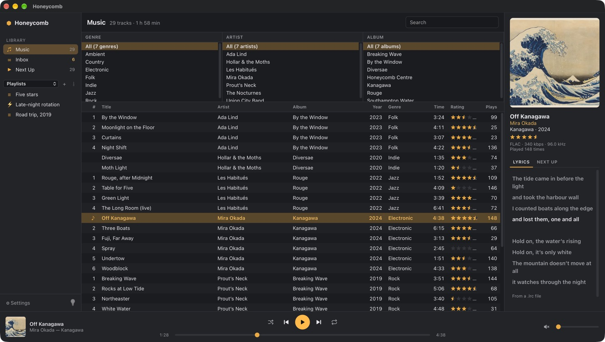
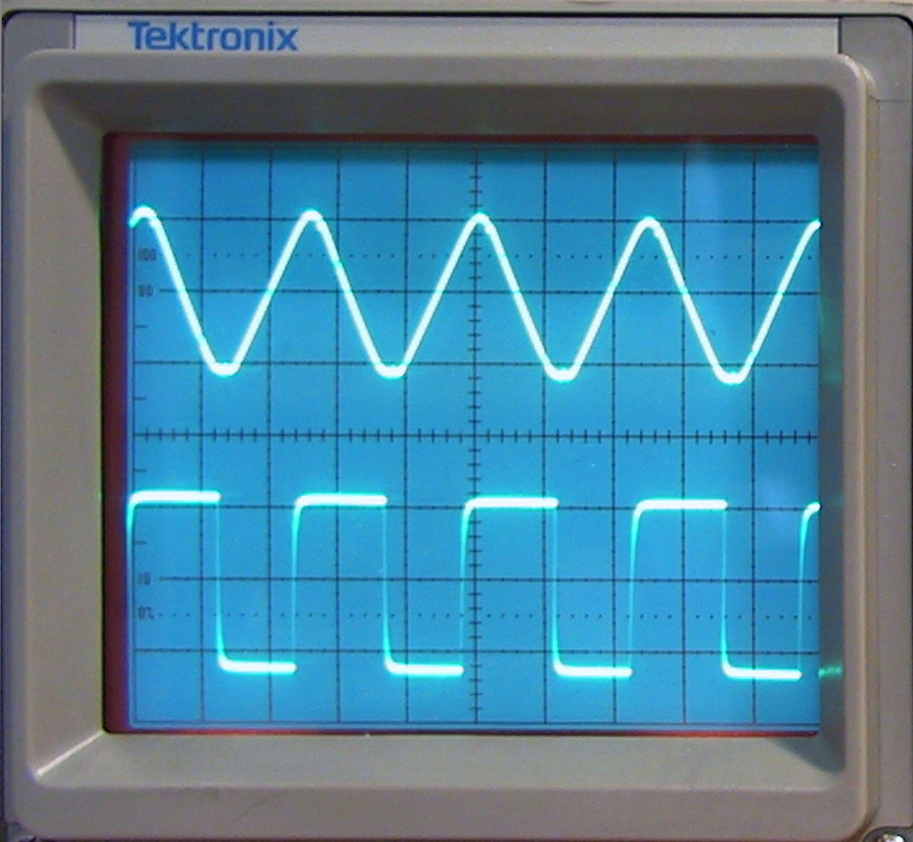
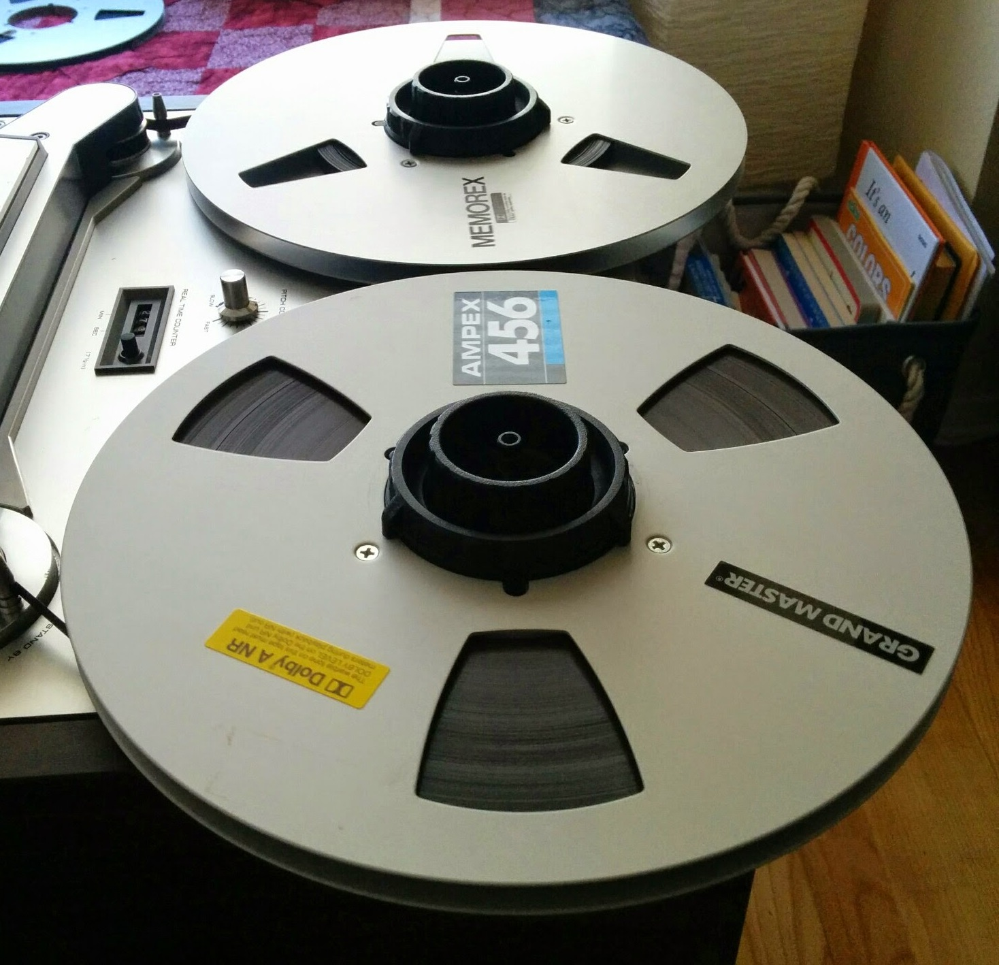
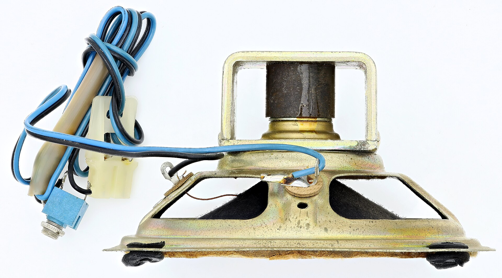
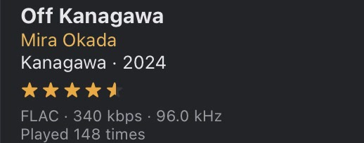

The window you click in. It sends the player commands (play, pause, seek, change the queue) and redraws from the player-tick and player-queue events that come back. It never touches audio, so a busy track list can’t make a song stutter.

Honeycomb’s window, on a test library.
Runs on
The app’s main thread, in the system web view
Built with
TypeScript and Tauri commands
Player
Decides what plays, and knows what is playing.
Owns the queue, shuffle and repeat. It tells the decoder which track to start and sends a plan of the tracks after it, then compares the decoder’s markers with the output’s sample counter to know exactly which song is playing and where. It reports to the system’s Now Playing controls and media keys.
It looks after the device too: every 2 seconds it checks whether the default output changed, and after 30 seconds paused or stopped it closes the output so your Mac’s audio hardware can sleep.
Runs on
Its own thread, named audio
Ticks
Every 200 ms while playing; not at all while idle
Decoder
Turns files into numbers.
Opens each file, finds its audio track and decodes it into 32-bit floating-point samples: MP3, FLAC, AAC, ALAC, Ogg Vorbis, WAV and AIFF. Encoder delay and padding are trimmed, so the silence an encoder adds at each end never reaches you. Seeking drops the audio before the target, so a jump lands on the exact moment. Ogg files that are several streams joined end to end play through to the last one.
Every call into the decoder is wrapped so that a panic is caught. A broken file fails on its own and can’t take the app down with it.
Runs on
Its own thread, named decoder
Built with
symphonia, with gapless trimming on
Converter
Makes the samples fit your device.
Channels first. Mono is copied to both speakers. Surround folds down to stereo: centre channels go to both sides and side and rear channels to their own side, each at −3 dB; the LFE channel is left out, and the mix is scaled so it can’t clip.
Then the rate, only if it has to. When your device can’t run at the file’s own rate, a band-limited sinc resampler converts it, and the filter’s start-up delay is trimmed so the timing still lines up with the markers.

A triangle and a square wave on an oscilloscope. The converter changes how a signal is stored, never its shape.
Runs on
The decoder thread
Built with
rubato: 256-tap sinc, Blackman-Harris window
Ring buffer
Keeps five seconds in hand.
A lock-free queue between the decoder and the output, sized for 5 seconds at the output’s rate and channel count. The decoder tops it up whenever a second of room opens and checks every 250 ms while it’s full, so a slow disk or a busy moment has seconds to recover before you’d hear anything.
Skipping or seeking doesn’t wait for the buffer to drain: the output is told to throw away everything before a given sample and carry on from there.

Tape reels once did the same job: sound queued up, waiting for the head.
Holds
rate × channels × 5 s, so 960,000 samples at 96 kHz stereo
Built with
rtrb, a single-producer, single-consumer ring
Output callback
Copies, and nothing else.
The system calls this many times a second and it has to answer on time, so it only copies samples out of the buffer and applies the volume. No locks, no memory allocation, no file access. Volume follows a cubic curve, so the slider feels even from top to bottom.
Volume changes and pauses ramp over 10 ms. If the buffer ever runs dry, the last sound fades out over the same 10 ms instead of stopping dead with a click, and fades back in when audio returns.
Try the slider: the number is the gain the callback multiplies each sample by, the slider’s position cubed.
Runs on
The system’s real-time audio thread
Built with
cpal, writing f32, i16, i32 or u16 samples
Device
Your speakers, headphones or interface.
Kaseki opens the system’s default output, at the file’s own sample rate whenever the device supports it, so the samples go out unchanged. That’s bit-perfect, and a test checks it bit for bit. If opening at that rate fails, it falls back to the device’s default rate. If the stream reports an error, the player reopens it.

Where the samples end up: a magnet, a coil and a cone.
Talks to
Core Audio on macOS, WASAPI on Windows
Opens
On first play, and closes after 30 s idle
Gapless, to the sample
The player sends the decoder a plan: the track to play now and the ones after it. When a track ends, the decoder doesn’t stop and reopen anything. It carries straight on with the next file, writing it into the same buffer, and leaves a marker at the exact sample where the new track begins.
Off Kanagawa4:38 at 96 kHzThree Boatsstarts here
The marker sits at sample 53,376,000, counting from the start of Off Kanagawa: 278 seconds × 96,000 samples a second × 2 channels.The player watches the output’s count of samples played. When it passes the marker, the track list moves on, with nothing missing in between.
Each marker also carries an epoch. When you skip or change the queue, the epoch goes up, and markers left over from the old plan are ignored. Change the queue, shuffle or repeat in the last two seconds of a song and the plan is rebuilt, so the right track still comes next.
Which rate it opens at
Resampling is the one step that changes the signal, so Kaseki avoids it. For each file it picks the output rate in this order:
The file’s own rate, if the device can run at it.
An exact fraction of it, no lower than 44.1 kHz: a 192 kHz file plays at 96 kHz on a MacBook’s headphone jack.
An exact multiple of it: 22.05 kHz becomes 44.1 kHz.
The highest common rate up to the file’s that the device offers above its default.
Otherwise the device’s default rate.

The Now Playing panel shows each file’s rate.
Try it
Opens at 96 kHz
The device can run at the file’s own rate, so nothing is resampled.
FLAC · 96.0 kHz → output 96.0 kHz, no resampling
When things go wrong
You unplug your headphones
The player notices the device has gone and pauses, instead of carrying on through your speakers. Plug them back in and press play.
The default output changes
Checked every 2 seconds. Kaseki reopens on the new device and picks up where it was.
The disk is slow for a moment
Five seconds are already decoded. If the buffer still runs dry, the sound fades out over 10 ms rather than clicking, and fades back in.
A file is broken
The decoder’s crash is caught. That one file fails with an error, and the app keeps running.
Quiet when nothing plays
With Kaseki, the output isn’t opened until something plays, it closes after 30 seconds paused or stopped, and the player stops ticking while idle. Sampled at rest, the decoder and audio threads sit blocked the whole time.
On the current build, idle CPU is about 1–2% of one core. At that level a 30-second sample is mostly noise.
Measured 19 October 2026 on an M1 Pro MacBook Pro in Low Power Mode, with a 100,000-track library: the app plus its web view processes, over 30 seconds at rest.